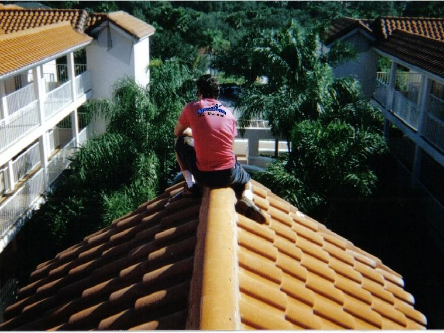
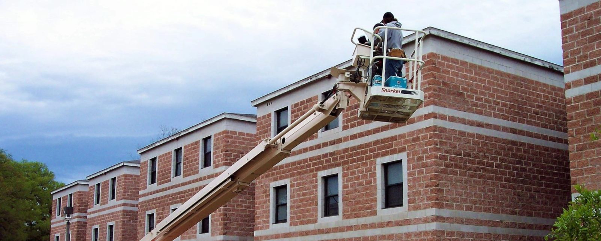

Bat Inspections
We identify the species, locate the roost and find every entry point so the right solution is used the first time.
Book an inspectionHumane bat exclusion, bat-proofing and guano cleanup for homes and businesses across Florida. We'll get the bats out — and keep them out. Guaranteed.
Our work focuses exclusively on bats — from finding every entry point to humane exclusion, cleanup and long-term prevention.
We identify the species, locate the roost and find every entry point so the right solution is used the first time.
Book an inspection
One-way exclusion devices let bats leave on their own — unharmed — without being able to get back in.
Get started
Every potential entry point is permanently sealed — tile, ridge caps, fascia and soffits — to stop re-entry.
Seal your home
Removal of droppings and contaminated insulation to eliminate odor and reduce health risks.
Request cleanup
Barrel tile, cedar shake, asphalt shingle or metal — we know where bats hide in each and which bat-proofing method works.

Schools, stadiums, hotels, restaurants, malls, golf courses, resorts and theme parks. No job is too tough.

Florida is home to 13 native bat species, and 5 of them roost in homes and buildings. Bats are the only mammal capable of true flight, and they play a vital role in Florida's ecosystem. When they move into a building, the goal is to resolve the problem while protecting both your property and the bats.
A single little brown bat can catch 1,200 mosquito-sized insects in an hour.
An average colony of Brazilian free-tailed bats can number in the hundreds.
All bats are federally protected. Exclusions should only be done by licensed pros.
This is when bats give birth and raise their young. Excluding bats now would trap flightless pups inside, so bat exclusions are prohibited during maternity season. Special permits may be obtained from the Florida Fish and Wildlife Conservation Commission (FWC).
Rabid bats often roost alone, may fly during the day, and stay still with their eyes closed or half closed. Paralytic rabies — not the aggressive strain seen in foxes, raccoons and dogs — is predominantly found in Mexican free-tailed bats. Most die within a few days. Avoid any contact with a bat that is on the ground or lets you approach it.
Histoplasma spores thrive in warm, humid conditions like Florida's and become airborne when dry droppings are disturbed. Severity depends on how many spores are inhaled and the person's health. Droppings should be removed after a bat exclusion to minimize the risk.
Bats aren't affected by many diseases lethal to humans, such as Ebola, SARS and Nipah, which makes them natural reservoirs. Most transmission to people has come from handling infected bats or feeding livestock fruit bats had eaten. Bats play a disproportionate role in maintaining the ecosystems we all depend on.
Learn more at the Florida Bat Conservancy ↗
If you notice three or more of these around your home, chances are you have a bat problem. A professional inspection confirms it.
Bats leaving around sunset or returning before sunrise. Double your count — not all leave nightly.
Squeaking that sounds like baby birds, mostly just before sunset and before sunrise.
Pellet-like guano below the roost, often stuck to walls and windows near the entry.
Brown or grey oily stains where bats squeeze in and out of the roost.
A pungent, urine-like smell coming from the bats themselves.
Estimate fees are based on travel distance from our New Smyrna Beach office. Confirm your distance and fee when scheduling.
These are estimate and travel fees, not prices for bat removal or cleanup. Final project pricing depends on the structure, entry points, colony and scope of work.
Bats are extremely territorial. Unless an exclusion is done correctly, the problem persists — so we follow the same proven steps on every job.
We identify the species, the roost, and every entry and exit point on the structure.
We choose the right exclusion and bat-proofing method for your roof type and the season.
Outside maternity season, one-way devices let the bats exit safely and prevent re-entry.
We permanently seal entry points and recommend guano cleanup or insulation replacement.

American Bat Removal was founded in 2004 by bat enthusiast and removal specialist David Diaz. We're a Florida-based, family-owned conservation company dealing strictly with the humane removal of bats from homes, commercial buildings and other structures.
Many bats have been killed or injured by unqualified people using methods that don't work. Our experience, our knowledge of bat behavior and our dedication to quality are what set us apart — our goal is to satisfy our customers and protect the bats.
Based in New Smyrna Beach, we serve five regions across the state. Not listed? Call 772-260-1417 to confirm availability.
No. Exclusions are prohibited during maternity season, April 15 through August 15, so flightless young aren't trapped inside. Removal during that period requires a special permit from FWC.
Yes. All bats are protected under federal law. We deal strictly in humane exclusion — the bats leave on their own, unharmed, and can't get back in.
On barrel-tile roofs, bats roost under the tiles on top of the decking — not in the attic — through gaps as small as 1/2 inch. On cedar shake and metal roofs they roost under the ridge caps. On asphalt shingle roofs they enter through gaps in the fascia or soffit and may reach the attic.
It depends on the structure, entry points, colony size, accessibility and any cleanup required. Your estimate lays out the exact scope and price. See estimate pricing.
All labor and materials for work completed by ABR, effective once final payment is received. Damage to the final seal from animals, storms, fire, vandalism, aging roof materials, or alterations by other contractors (such as pressure washing or roof repairs) voids the warranty. It may be extended annually after expiration. Call for full terms.
Not through the openings we seal. Proper exclusion and bat-proofing keep them out, and our work is backed by a 2-year warranty.
Stay calm and don't hit it. Turn off the inside lights, leave an outside light on, and open a window or door — it will usually fly right out. If it lands on the floor, gently cover it with a towel and place it outside.
No. American Bat Removal specializes exclusively in bats — inspections, humane exclusion, bat-proofing and cleanup.
We guarantee our bat removal results. Request an inspection and get clear next steps.
Tell us what you've noticed, where the property is, and how to reach you. We'll follow up to schedule your estimate.